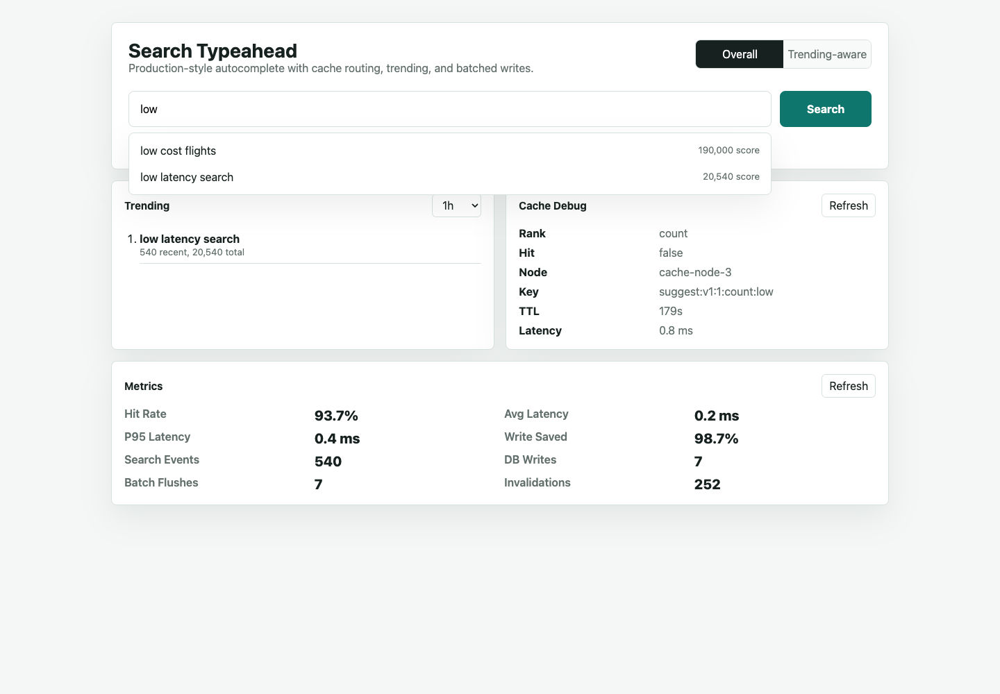
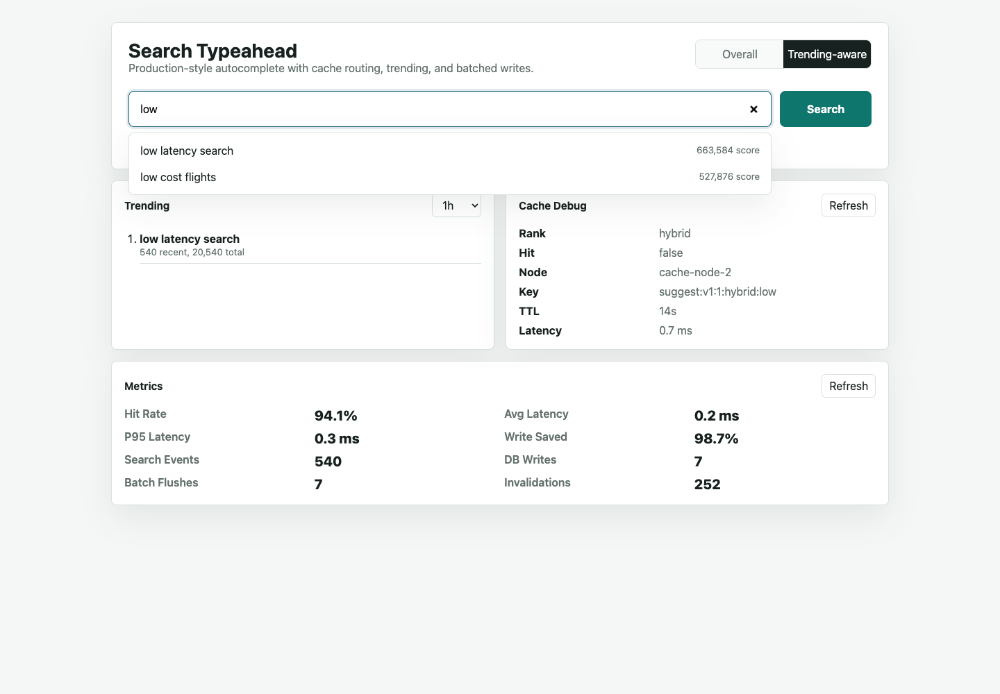

HLD Assignment Project Report
The system is designed as a production-style typeahead service where the API path is stateless, read-heavy prefix requests are cached, and search-count writes are durably buffered before batched updates.
Browser UI
-> Spring Boot API
-> Suggestion Service
-> Query Normalizer
-> ConsistentHashRing
-> Redis Prefix Cache Shards
-> OpenSearch Suggestion Index
-> Search Submission Service
-> Kafka Search Events
-> Batch Aggregator Worker
-> PostgreSQL query-count upsert
-> Trend bucket update
-> OpenSearch weight refresh
-> Redis prefix cache invalidation
-> Metrics and Actuator
| Component | Responsibility | Production Choice |
|---|---|---|
| Spring Boot API | REST APIs, validation, static UI, OpenAPI docs, metrics | Java 21 + Spring Boot |
| Query Store | Durable query text, historical counts, import metadata, trend buckets | PostgreSQL |
| Suggestion Index | Low-latency prefix retrieval and weighted ranking | OpenSearch completion suggester |
| Prefix Cache | Hot prefix result cache with TTL | Redis shards |
| Cache Router | Maps prefix keys to cache nodes | Java consistent hash ring with virtual nodes |
| Write Buffer | Durable search-event ingestion | Kafka |
| Batch Worker | Aggregates repeated searches and reduces DB writes | Spring scheduled/Kafka consumer worker |
iph.suggest:v1:{version}:{rank}:{prefix}.POST /search.Primary dataset: AmazonQAC, a real query-autocomplete dataset from Amazon Search logs.
final_search_term, popularity, search_time, prefixesThe Java importer accepts AmazonQAC CSV or JSONL export files with these fields:
final_search_term,popularity,search_time,prefixes
Load at least 100,000 unique queries:
mvn -Dmaven.repo.local=.m2/repository spring-boot:run \ -Dspring-boot.run.arguments="--typeahead.dataset.import-path=/path/to/amazonqac_100k.csv --typeahead.dataset.import-limit=100000"
The repository also includes data/sample-amazonqac-smoke.csv only for quick smoke testing.
The official dataset source remains AmazonQAC.
Swagger/OpenAPI is available at /docs when the app is running.
| API | Purpose | Notes |
|---|---|---|
GET /suggest?q=iph&rank=count | Basic top 10 suggestions | Sorts by historical count only. |
GET /suggest?q=iph&rank=hybrid | Trending-aware suggestions | Combines historical and recent activity. |
POST /search | Dummy search submission | Returns Searched and queues count update. |
GET /trending?window=1h | Trending searches | Supports 1h, 24h, 7d. |
GET /cache/debug?prefix=iph | Cache routing debug | Shows selected node, hit/miss, key, TTL, ring settings. |
GET /metrics | Performance evidence | Latency, p95, cache hit rate, DB writes, write reduction. |
Example suggestion response:
{
"query": "iph",
"rank": "hybrid",
"suggestions": [
{
"query": "iphone 15",
"historical_count": 850000,
"recent_count_1h": 312,
"recent_count_24h": 1205,
"score": 918240
}
],
"cache": {
"hit": true,
"node": "cache-node-2",
"key": "suggest:v1:1:hybrid:iph"
},
"latency_ms": 3.7
}
PostgreSQL provides durable upserts, indexing, auditability, and easy inspection. It is not the hot read path; Redis and OpenSearch handle typeahead latency. At very large scale, the counter store could be moved to Cassandra, ScyllaDB, or DynamoDB.
OpenSearch completion suggesters provide prefix autocomplete with weighted ranking. The trade-off is eventual consistency because weights are refreshed after batch flushes.
Prefixes are read-heavy and highly repetitive, so caching top suggestions reduces latency. A Java consistent hash ring with 128 virtual nodes per cache node routes keys. Adding/removing a node remaps only a fraction of keys, unlike modulo hashing.
Basic mode uses only historical count. Enhanced mode uses:
score = log10(historical_count + 1) * 100000 + log10(recent_count_1h + 1) * 60000 + log10(recent_count_24h + 1) * 25000
Recent activity is tracked in 5-minute buckets. Old spikes stop dominating because old buckets fall out of the selected window and hybrid cache TTL is short.
Kafka is used as a durable write buffer. The batch worker aggregates repeated queries and performs fewer database writes. This trades immediate consistency for lower write pressure and better reliability than an in-memory-only buffer.
Smoke-profile benchmark command:
./scripts/benchmark.sh
| Metric | Measured Value |
|---|---|
| Suggest requests | 203 |
| Cache hits | 192 |
| Cache misses | 11 |
| Cache hit rate | 94.58% |
| Average suggest latency | 0.16 ms |
| P95 suggest latency | 0.34 ms |
| Search events received | 540 |
| DB write operations | 7 |
| Writes saved by batching | 533 |
| Write reduction | 98.70% |
These numbers were measured in the default smoke profile. The same benchmark script should be rerun after loading the 100,000-query AmazonQAC subset for final full-dataset evidence.
The UI demonstrates the required ranking difference. In historical mode, low cost flights wins by
all-time count. After repeated searches, trending-aware mode lifts low latency search.


| Component | Marks | Coverage |
|---|---|---|
| Basic Implementation | 60 | Dataset import, UI, suggestions API, search API, count updates, distributed cache with consistent hashing. |
| Trending Searches | 20 | Windowed buckets, hybrid score, /trending endpoint, stale-spike prevention, visible count-vs-hybrid demo. |
| Batch Writes | 20 | Kafka/event-buffer design, aggregation, write-reduction metrics, failure trade-off explanation. |